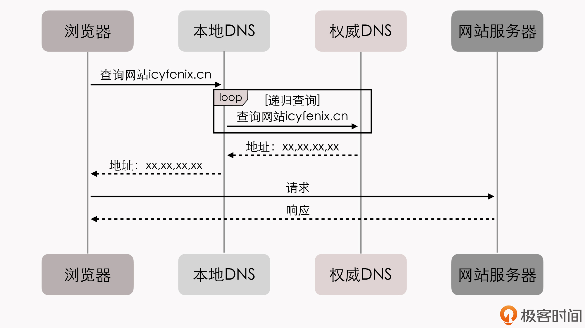
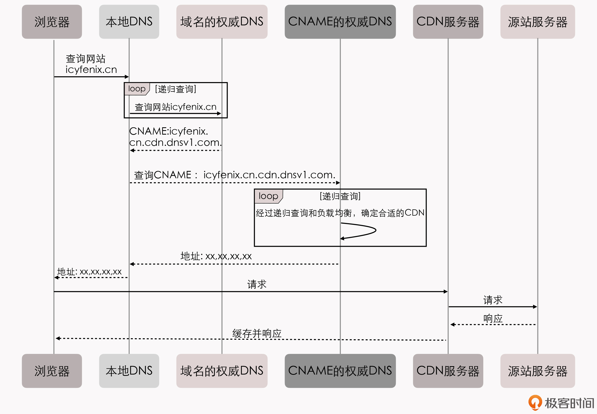
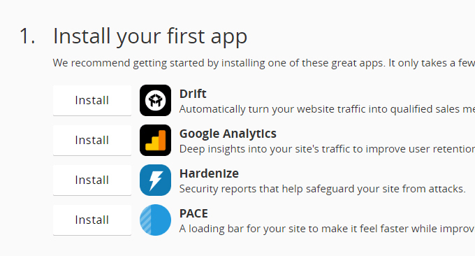

- 00 _导读 _ 什么是“The Fenix Project”？.md
- 00 开篇词 _ 如何构建一个可靠的分布式系统？.md
- 01 _ 原始分布式时代：Unix设计哲学下的服务探索.md
- 02 _ 单体系统时代：应用最广泛的架构风格.md
- 03 _ SOA时代：成功理论与失败实践.md
- 04 _ 微服务时代：SOA的革命者.md
- 05 _ 后微服务时代：跨越软件与硬件之间的界限.md
- 06 _ 无服务时代：“不分布式”云端系统的起点.md
- 07 _ 远程服务调用（上）：从本地方法到远程方法的桥梁.md
- 08 _ 远程服务调用（下）：如何选择适合自己的RPC框架？.md
- 09 _ RESTful服务（上）：从面向过程编程到面向资源编程.md
- 10 _ RESTful服务（下）：如何评价服务是否RESTful？.md
- 11 _ 本地事务如何实现原子性和持久性？.md
- 12 _ 本地事务如何实现隔离性？.md
- 13 _ 全局事务和共享事务是如何实现的？.md
- 14 _ 分布式事务之可靠消息队列.md
- 15 _ 分布式事务之TCC与SAGA.md
- 16 _ 域名解析系统，优化HTTP性能的第一步.md
- 17 _ 客户端缓存是如何帮助服务器分担流量的？.md
- 18 _ 传输链路，优化HTTP传输速度的小技巧.md
- 19 _ 如何利用内容分发网络来提高网络性能？.md
- 20 _ 常见的四层负载均衡的工作模式是怎样的？.md
- 21 _ 服务端缓存的三种属性.md
- 22 _ 分布式缓存如何与本地缓存配合，提高系统性能？.md
- 23 _ 认证：系统如何正确分辨操作用户的真实身份？.md
- 24 _ 授权（上）：系统如何确保授权的过程可靠？.md
- 25 _ 授权（下）：系统如何确保授权的结果可控？.md
- 26 _ 凭证：系统如何保证与用户之间的承诺是准确完整且不可抵赖的？.md
- 27 _ 保密：系统如何保证敏感数据无法被内外部人员窃取滥用？.md
- 28 _ 传输（上）：传输安全的基础，摘要、加密与签名.md
- 29 _ 传输（下）：数字证书与传输安全层.md
- 30 _ 验证：系统如何确保提交给服务的数据是安全的？.md
- 31 _ 分布式共识（上）：想用好分布式框架，先学会Paxos算法吧.md
- 32 _ 分布式共识（下）：Multi Paxos、Raft与Gossip，分布式领域的基石.md
- 33 _ 服务发现如何做到持续维护服务地址在动态运维中的时效性？.md
- 34 _ 路由凭什么作为微服务网关的基础职能？.md
- 35 _ 如何在客户端实现服务的负载均衡？.md
- 36 _ 面对程序故障，我们该做些什么？.md
- 37 _ 要实现某种容错策略，我们该怎么做？.md
- 38 _ 限流的目标与模式.md
- 39 _ 如何构建零信任网络安全？.md
- 40 _ 如何实现零信任网络下安全的服务访问？.md
- 41 _ 分布式架构中的可观测到底说的是什么？.md
- 42 _ 分析日志真的没那么简单.md
- 43 _ 一个完整的分布式追踪系统是什么样子的？.md
- 44 _ 聚合度量能给我们解决什么问题？.md
- 45 _ 模块导学：从微服务到云原生.md
- 46 _ 容器的崛起（上）：文件、访问、资源的隔离.md
- 47 _ 容器的崛起（下）：系统、应用、集群的封装.md
- 48 _ 以容器构建系统（上）：隔离与协作.md
- 49 _ 以容器构建系统（下）：韧性与弹性.md
- 50 _ 应用为中心的封装（上）：Kustomize与Helm.md
- 51 _ 应用为中心的封装（下）：Operator与OAM.md
- 52 _ Linux网络虚拟化（上）：信息是如何通过网络传输被另一个程序接收到的？.md
- 53 _ Linux网络虚拟化（下）：Docker所提供的容器通讯方案有哪些？.md
- 54 _ 容器网络与生态：与CNM竞争过后的CNI下的网络插件生态.md
- 55 _ 谈谈Kubernetes的存储设计理念.md
- 56 _ Kubernetes存储扩展架构：一个真实的存储系统如何接入或移除新存储设备？.md
- 57 _ Kubernetes存储生态系统：几种有代表性的CSI存储插件的实现.md
- 58 _ Kubernetes的资源模型与调度器设计.md
- 59 _ 透明通讯的涅槃（上）：通讯的成本.md
- 60 _ 透明通讯的涅槃（下）：控制平面与数据平面.md
- 61 _ 服务网格与生态：聊聊服务网格的两项标准规范.md
- 63 _ 基于Spring Boot的单体架构.md
- 64 _ 基于Spring Cloud的微服务架构.md
- 65 _ 基于Kubernetes的微服务架构.md
- 66 _ 基于Istio的服务网格架构.md
- 67 _ 基于云计算的无服务架构.md
- 春节特别放送（上）_ 有的放矢，事半功倍.md
- 春节特别放送（下）_ 积累沉淀，知行合一.md
- 用户故事 _ 詹应达：持续成长，不惧未来.md
- 结束语 _ 程序员之路.md
- 结课测试 _ 一套习题，测出你的掌握程度.md
19 _ 如何利用内容分发网络来提高网络性能？
你好，我是周志明。
前面几讲中，我给你介绍了客户端缓存、域名解析、链路优化这三种与客户端关系较密切的传输优化机制。这节课，我们来讨论一个针对这三种机制的经典综合运用案例：内容分发网络（CDN，Content Distribution Network或Content Delivery Network）。
内容分发网络是一种十分古老的应用，你应该也听说过它的名字，多少知道它是用来做什么的。简单理解的话，CDN其实就是做“内容分销”工作的。
我给你举个例子吧。假设，我们把某个互联网系统比喻为一家开门营业的企业，那内容分发网络就是它遍布世界各地的分支销售机构。如果一位客户要买一块CPU，我们要是订机票飞到美国Intel总部去采购，那肯定是不合适的，到本地电脑城找个装机铺才是正常人的做法。所以在这个场景里，内容分发网络就相当于电脑城那吆喝着CPU三十块钱一斤的本地经销商。
然后，内容分发网络又是一种十分透明的应用，一般不需要我们参与它的工作过程。所以我想，如果你没有自己亲身使用和专门研究过，那可能就不太清楚它是如何为互联网站点分流的，也不太会注意到它的工作原理是什么。
实际上，内容分发网络的工作过程，主要涉及到路由解析、内容分发、负载均衡和它所能支持的应用内容四个方面。今天这节课，我们先来了解内容分发网络可以解决哪些网络传输问题，也就是先着重探讨除负载均衡以外的其他三个方面的工作。在下一讲中，我会专门跟你讨论负载均衡的内容。
好，如果忽略其他影响服务质量的因素，仅从网络传输的角度来看，一个互联网系统的速度快慢，主要取决于以下四点因素：
- 网站服务器接入网络运营商的链路所能提供的出口带宽。
- 用户客户端接入网络运营商的链路所能提供的入口带宽。
- 从网站到用户之间，经过的不同运营商之间互联节点的带宽。一般来说，两个运营商之间只有固定的若干个点是互通的，所有跨运营商之间的交互都要经过这些点。
- 从网站到用户之间的物理链路传输时延。你要是爱打游戏的话，应该就很清楚了，延迟（Ping值）通常比带宽更重要。
以上四个网络问题，除了第二个只能由用户掏腰包，装个更好的宽带才能够解决之外，其余三个都能通过内容分发网络来改善。
所以说，一个运作良好的内容分发网络，能为互联网系统解决跨运营商、跨地域物理距离所导致的时延问题，也能给网站流量带宽起到分流、减负的作用。
举个例子，如果没有遍布全国乃至全世界的阿里云CDN网络支持，哪怕把整个杭州所有网民的上网权利都剥夺了，把带宽全部让给淘宝的机房，恐怕也撑不住双十一全国甚至是全球用户的疯狂围殴。
那么接下来，我们就从CDN工作流程的第一步“路由解析”开始，来全面了解下，CDN是如何进行网络加速的。
路由解析
在第16讲我给你介绍DNS域名解析的时候，提到过翻译域名不需要像查电话本一样，刻板地一对一翻译，DNS可以根据来访机器、网络链路、服务内容等各种信息，玩出很多花样。
而内容分发网络将用户请求路由到它的资源服务器上，其实就是依靠DNS服务器来实现的。
那么，根据我们现在对DNS域名解析的了解，一次没有内容分发网络参与的用户访问，它的解析过程应该是这样的：

即查询icyfenix.cn的请求，发送至本地DNS后，会递归查询，直至找到能够解析icyfenix.cn地址的权威DNS服务器，最终把解析结果返回给浏览器。
而有了内容分发网络的介入，这个解析过程会发生什么变化呢？
我们不妨先来看一段对网站“icyfenix.cn”进行DNS查询的真实应答记录，这个网站就是通过国内的内容分发网络，来给位于GitHub Pages上的静态页面加速的。
通过dig或者host命令，我们就能很方便地得到DNS服务器的返回结果（结果中头4个IP的城市地址是我手工加入的，后面的其他记录就不一个一个查了），如下所示：
$ dig icyfenix.cn
; <<>> DiG 9.11.3-1ubuntu1.8-Ubuntu <<>> icyfenix.cn
;; global options: +cmd
;; Got answer:
;; ->>HEADER<<- opcode: QUERY, status: NOERROR, id: 60630
;; flags: qr rd ra; QUERY: 1, ANSWER: 17, AUTHORITY: 0, ADDITIONAL: 1
;; OPT PSEUDOSECTION:
; EDNS: version: 0, flags:; udp: 65494
;; QUESTION SECTION:
;icyfenix.cn. IN A
;; ANSWER SECTION:
icyfenix.cn. 600 IN CNAME icyfenix.cn.cdn.dnsv1.com.
icyfenix.cn.cdn.dnsv1.com. 599 IN CNAME 4yi4q4z6.dispatch.spcdntip.com.
4yi4q4z6.dispatch.spcdntip.com. 60 IN A 101.71.72.192 #浙江宁波市
4yi4q4z6.dispatch.spcdntip.com. 60 IN A 113.200.16.234 #陕西省榆林市
4yi4q4z6.dispatch.spcdntip.com. 60 IN A 116.95.25.196 #内蒙古自治区呼和浩特市
4yi4q4z6.dispatch.spcdntip.com. 60 IN A 116.178.66.65 #新疆维吾尔自治区乌鲁木齐市
4yi4q4z6.dispatch.spcdntip.com. 60 IN A 118.212.234.144
4yi4q4z6.dispatch.spcdntip.com. 60 IN A 211.91.160.228
4yi4q4z6.dispatch.spcdntip.com. 60 IN A 211.97.73.224
4yi4q4z6.dispatch.spcdntip.com. 60 IN A 218.11.8.232
4yi4q4z6.dispatch.spcdntip.com. 60 IN A 221.204.166.70
4yi4q4z6.dispatch.spcdntip.com. 60 IN A 14.204.74.140
4yi4q4z6.dispatch.spcdntip.com. 60 IN A 43.242.166.88
4yi4q4z6.dispatch.spcdntip.com. 60 IN A 59.80.39.110
4yi4q4z6.dispatch.spcdntip.com. 60 IN A 59.83.204.12
4yi4q4z6.dispatch.spcdntip.com. 60 IN A 59.83.204.14
4yi4q4z6.dispatch.spcdntip.com. 60 IN A 59.83.218.235
;; Query time: 74 msec
;; SERVER: 127.0.0.53#53(127.0.0.53)
;; WHEN: Sat Apr 11 22:33:56 CST 2020
;; MSG SIZE rcvd: 152
那么，根据这个解析信息，我们可以知道，DNS服务为“icyfenix.cn”的查询结果先返回了一个CNAME记录“icyfenxi.cn.cdn.dnsv1.com”，服务器在递归查询该CNAME时候，返回了另一个看起来更奇怪的CNAME“4yi4q4z6.dispatch.spcdntip.com”。继续查询后，这个CNAME返回了十几个位于全国不同地区的A记录。
很明显，这些A记录就是分布在全国各地、存有本站缓存的CDN节点。由此，我们就能清晰地了解到CDN路由解析的具体工作过程了：
- 架设好“icyfenix.cn”的服务器后，将服务器的IP地址在你的CDN服务商上注册为“源站”，注册后你会得到一个CNAME，也就是这个例子当中的“icyfenxi.cn.cdn.dnsv1.com”。
- 接着，将得到的CNAME在你购买域名的DNS服务商上，注册为一条CNAME记录。
- 当第一位用户来访问你的站点时，会首先发生一次未命中缓存的DNS查询，域名服务商解析出CNAME后，会返回给本地DNS。到这里，后续的链路解析的主导权就开始由内容分发网络的调度服务接管了。
- 本地DNS查询CNAME时，由于能解析该CNAME的权威服务器，只有CDN服务商所架设的权威DNS，这个DNS服务会根据一定的均衡策略和参数，比如拓扑结构、容量、时延等等，在全国各地能提供服务的CDN缓存节点中挑选一个最适合的，把它的IP替换成源站的IP地址，然后返回给本地DNS。
- 浏览器从本地DNS拿到了IP地址后，就会把该IP当作源站服务器来进行访问，此时该IP的CDN节点上可能有，也可能没有缓存过源站的资源（这一点我们马上会在讲“内容分发”的部分展开讨论）。
- 最后，经过内容分发后的CDN节点，就有能力代替源站向用户提供所请求的资源了。
那么，把前面解析的这个步骤反映在时序图上，会是什么样子的呢？你可以参考我在这里给出的图例，然后对比一下我在前面所给出的没有CDN参与的时序图，看看它们都有什么不同之处：

好了，现在我们就已经了解了CDN中路由解析的工作流程了。下面我们一起来看看CDN加速的核心：内容分发。
内容分发
我们已经知道，在DNS服务器的协助下，无论是对用户还是服务器，内容分发网络都可以是完全透明的，在两者都不知情的情况下，由CDN的缓存节点接管用户向服务器发出的资源请求。
但随之而来的问题，就是缓存节点中必须要有用户想要请求的资源副本，才可能代替源站来响应用户请求。而这里面又包括了两个子问题：“如何获取源站资源”和“如何管理（更新）资源”。
所以，CDN是如何解决这两个问题的呢？
首先，对于“如何获取源站资源”这个问题，CDN获取源站资源的过程被称为“内容分发”，“内容分发网络”的名字也正是由此而来的，可见这是CDN的核心价值。
那么，在内容分发的过程中，我们可以采取两种主流的内容分发方式：
第一种：主动分发（Push）
顾名思义，主动分发就是由源站主动发起，将内容从源站或者其他资源库推送到用户边缘的各个CDN缓存节点上。这个推送的操作没有什么业界标准可循，我们可以采用任何传输方式（如HTTP、FTP、P2P等）、任何推送策略（如满足特定条件、定时、人工等）、任何推送时间，只要与我后面要说的更新策略相匹配即可。
不过你要注意，由于主动分发通常需要源站、CDN服务双方提供的程序API接口层面的配合，所以它对源站并不是透明的，只对用户一侧单向透明。
另外，主动分发的方式一般是用于网站要预载大量资源的场景。比如双十一之前的一段时间内，淘宝、京东等各个网络商城，就会开始把未来活动中需要用到的资源推送到CDN缓存节点中，特别常用的资源甚至会直接缓存到你的手机App的存储空间，或者浏览器的localStorage上。
第二种：被动回源（Pull）
被动回源就是指由用户访问所触发的全自动、双向透明的资源缓存过程。当某个资源首次被用户请求的时候，CDN缓存节点如果发现自己没有该资源，就会实时从源站中获取。这时资源的响应时间可粗略认为是资源从源站到CDN缓存节点的时间，再加上资源从CDN发送到用户的时间之和。
所以，被动回源的首次访问通常是比较慢的（但由于CDN的网络条件一般远高于普通用户，并不一定就会比用户直接访问源站更慢），不适合应用于数据量较大的资源。
但是被动回源也有优点，就是它可以做到完全的双向透明，不需要源站在程序上做任何的配合，使用起来非常方便。
这种分发方式是小型站点使用CDN服务的主流选择，如果你不是自建CDN，而是购买阿里云、腾讯云的CDN服务的站点，它们多数采用的就是这种方式。
其次，对于“CDN如何管理（更新）资源”这个问题，同样也没有统一的标准可言。尽管在HTTP协议中，关于缓存的Header定义中确实是有对CDN这类共享缓存的一些指引性参数，比如Cache-Control的s-maxage，但是否要遵循，完全取决于CDN本身的实现策略。
而且，更令人感到无奈的是，由于大多数网站的开发和运维人员并不十分了解HTTP缓存机制，所以就导致了，如果CDN完全照着HTTP Headers来控制缓存失效和更新，效果反而会更差，而且还可能会引发其他的问题。所以，CDN缓存的管理没有通用的准则。
现在，最常见的管理（更新）资源的做法是超时被动失效与手工主动失效相结合。
超时失效是指给予缓存资源一定的生存期，超过了生存期就在下次请求时重新被动回源一次。而手工失效是指，CDN服务商一般会给程序调用提供失效缓存的接口，在网站更新时，由持续集成的流水线自动调用该接口来实现缓存更新，比如“icyfenix.cn”就是依靠Travis-CI的持续集成服务，来触发CDN失效和重新预热的。
CDN应用
内容分发网络最初是为了快速分发静态资源而设计的，但今天的CDN能做到的事情，已经远远超越了开始建设时的目标。所以下面，我想带你来了解一下现在的CDN都可以做到什么，它都有哪些应用。这里我先说明一下，我不会把CDN的各种应用全部展开细说，而是只做个简要地列举说明，我的目的是想帮你建立一个总体的关于CDN的认知，只要理解和掌握了CDN的原理，相信你也能发掘出许多这里没有列举的应用。
- 加速静态资源
这是CDN本职工作。
- 安全防御
在广义上，你可以把CDN看作是你网站的堡垒机，源站只对CDN提供服务，然后由CDN来服务外界的其他用户，这样恶意攻击者就不容易直接威胁源站。CDN对防御某些攻击手段，如DDoS攻击等尤其有效。
但你也需要注意的是，把安全性都寄托在CDN上本身其实是不安全的，一旦源站的真实IP被泄露，就会面临很高的风险。
- 协议升级
不少CDN提供商都同时对接（代售CA的）SSL证书服务，这样就可以实现源站是HTTP协议的，而对外开放的网站是基于HTTPS的。
同理，这样的做法也可以实现源站到CDN是HTTP/1.x协议，而CDN提供的外部服务是HTTP/2或HTTP/3协议；或者是实现源站是基于IPv4网络的，CDN提供的外部服务支持IPv6网络，等等。
- 状态缓存
在第17讲我介绍客户端缓存的时候，简要提到了状态缓存的实现机制，即不经过服务器，客户端直接根据缓存信息来判断目标网站的状态。而CDN不仅可以缓存源站的资源，还可以缓存源站的状态，比如源站的301/302转向就可以缓存起来，让客户端直接跳转；还可以通过CDN开启HSTS、通过CDN进行OCSP装订，来加速SSL证书访问，等等。
另外，有一些情况下，我们甚至可以配置CDN对任意状态码（如404）进行一定时间的缓存，以减轻源站压力。但这个操作你要慎重，注意要在网站状态发生改变时去及时刷新缓存。
- 修改资源
CDN可以在给用户返回资源的时候，修改它的任何内容，以实现不同的目的。比如说，可以对源站未压缩的资源自动压缩，并修改Content-Encoding，以节省用户的网络带宽消耗；可以针对源站未启用客户端缓存的内容，加上缓存Header，来自动启用客户端缓存；可以修改CORS的相关Header，给源站不支持跨域的资源提供跨域能力，等等。
- 访问控制
CDN可以实现IP黑/白名单功能。比如，根据不同的来访IP提供不同的响应结果、根据IP的访问流量来实现QoS控制、根据HTTP的Referer来实现防盗链，等等。
- 注入功能
CDN可以在不修改源站代码的前提下，为源站注入各种功能。举个例子，下图是国际CDN巨头CloudFlare提供的Google Analytics、PACE、Hardenize等第三方应用，这些原本需要在源站中注入代码的应用，在CDN下都可以做到无需修改源站任何代码即可使用。

小结
CDN是一种已经存在了很长时间，也被人们广泛应用的分流系统。它能为互联网系统提供性能上的加速，也能帮助增强许多功能，比如说我今天所讲的安全防御、资源修改、功能注入，等等。
而且，这一切又实现得极为透明，可以完全不需要我们这样的开发者来配合，甚至可以在我们不知情的情况下完成，以至于CDN没什么存在感，虽然我们可能都说听过它，但却没有真正了解过它。所以学完了这一讲，你应该就对CDN有更全面的理解了。
另外，CDN本身就是透明多级分流系统的一个优秀范例，我希望你不仅可以学会CDN本身的功能与运作原理，而且可以在实际的工作中，将这种透明多级分流的思路应用于不同的场景，构建出更加健壮、能应对更大流量的系统。
一课一思
除了我们已经介绍到的DNS和CDN，你还了解软件业界里哪些常见的系统符合“透明多级分流”的特征呢？欢迎在留言区分享出来。
如果你觉得有收获，也欢迎把今天的内容分享给更多的朋友。感谢你的阅读，我们下一讲再见。
© 2019 - 2023 Liangliang Lee. Powered by gin and hexo-theme-book.